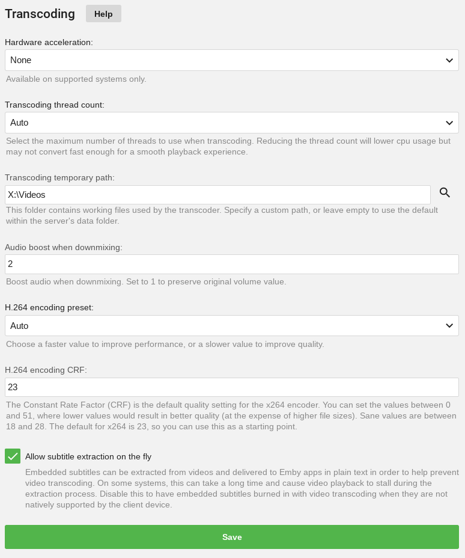

Emby 深度解析：转码判断链、硬件加速与四维度兼容策略
同样是流媒体服务器，为什么 Emby 在某些设备上能直放、某些却必须转码？本文拆解它背后的转码判断机制、硬件加速原理和四维度兼容设计，讲清这套系统为什么这么快、又为什么这么挑。
为什么同一部片，在 iPad 上要等、在 Apple TV 上却秒开？
这个问题困扰过我很久。手里一份 40 Mbps 的 HEVC 电影，在 Apple TV 4K 上点播放秒出画面，同一时刻 iPad 端点进去却要卡 10 秒才开始——而服务器是同一台 N100 迷你主机、同一个 Emby Server、甚至连 Wi-Fi 环境都没换。
直到我翻 Emby 的转码日志才看明白：iPad 那条请求被判定为「视频编码 HEVC + 客户端能力不足 → 转码 H.264」，而 Apple TV 4K 走的是 Direct Play 路径，连帧都没动过，纯数据搬运。
这就是 Emby官网 定位的核心设计——它不是一个简单的"视频分发器"，它是一个会做能力协商的智能中间层。每一次播放请求，Server 都会对文件、客户端、网络做一轮系统的兼容性检查，然后决定走哪条路径。这套判断机制的精妙之处，远远超过了一个普通媒体中心应该有的复杂度。
转码判断链：四个维度为什么这么排
Emby 做兼容性检查时，按一个固定的顺序往下走：
- 比特率匹配吗？ —— 文件码率是否超过了客户端设置的最大流媒体码率
- 视频编码支持吗？ —— HEVC/H.265、VP9、AV1 这些老设备可能不认
- 音频编码支持吗？ —— DTS、DTS-HD、TrueHD 苹果生态全都不支持
- 字幕格式支持吗？ —— PGS 蓝光字幕浏览器没有原生能力，必须烧录进画面
我仔细想了一下这个顺序——它不是随便排的。每一层检查的开销不同、触发频率也不同：
比特率排第一，是因为这是最刚性的硬限制——远程访问带宽不够就是不够，再强的硬解也没辙。而且这一层判断完全是数值比较，开销几乎为零，先过一遍能快速过滤掉一大批"根本没法直放"的请求。
视频编码排第二，因为视频编码的硬件解码能力是设备差异最大的地方。Apple TV 4K 2 代起有 HEVC 硬解，iPad Air 4 之后也支持 HEVC，但老款 Android TV 盒子可能还在原地踏步。这一层是判断"直放 vs 软解"的分水岭。
音频编码排第三，因为音频编码的不兼容是最常见的"隐性转码触发"——文件看起来能直放，音轨却是 DTS，苹果设备不支持，于是整条音频链被迫转码成 AAC，CPU 瞬间飙上去。这一层是排查用户抱怨"为什么我明明买了 Premiere 硬件转码还是卡"时最常发现的原因。
字幕排第四，是最特殊的一层。字幕不碰视频音频轨，只决定要不要"烧录"——把字幕直接画进每一帧画面里。烧录意味着整个视频必须重编码，因为画面内容变了。浏览器没有 PGS 蓝光字幕的原生支持，Web Client 遇到带 PGS 字幕的蓝光原盘，十有八九要触发烧录转码。
这个四维度链的设计思想，像极了网络协议层的"快速失败"——用最小的代价、最快的顺序把不可能的路径提前排除。我见过别的流媒体服务器（比如旧版 Plex）把所有检查混在一起做，结果每次请求都要跑完整的元数据读取和格式探测链，哪怕文件已经缓存过也一样。Emby 把判断拆成有序的四层，前面过了才往后面走，开销省了一大截。

硬件加速：从 ffmpeg 的 CPU 狂飙到 GPU 的专用单元
从 Emby下载 拿到的免费版只有软件转码——纯 CPU 跑 ffmpeg。一个 N100 迷你主机同时转 2 路 1080p，CPU 就能飙到 100%，风扇开始狂转，第三路请求进来直接排队。
Premiere 解锁的硬件加速本质上是把转码任务从 CPU 的通用计算单元（C 核）转移到 GPU 旁边那颗专门干视频活的固定功能单元上——Intel Quick Sync、NVIDIA NVENC、AMD VCE，各家叫法不同，但干的事情是一样的：不做浮点运算、不做通用逻辑判断，只做视频编解码这一件事，硬连线烧在芯片里。
这颗单元到底有多强？同样是转码 H.264 1080p：N100 的软解速度大约是 2~3 fps，而 Quick Sync 硬解能跑到 200~300 fps——速度差两个数量级，CPU 负载反而降到 10~20%。这就是为什么 Premiere 是远程访问需求的必选项：家里跑一台 Emby Server，同时给三个人远程看不同的片，没有硬件加速根本扛不住。
但硬件加速不是无条件能用的。如果你的 Docker 容器没加 --device=/dev/dri/renderD128 把 Intel 核显透传进去，Emby Server 根本看不到这颗硬件单元，Premiere 白买。NVIDIA 独显还需要单独装 nvidia-docker Runtime，参数配错一个都不行。这也是 Emby文档 里花大量篇幅讲硬件透传和驱动版本的原因——硬件加速的每一步都是有依赖的，任何一环断掉都会退回软件转码。
多路径媒体库：一个"虚拟合并"的巧思
Emby 的媒体库支持一个库挂多个物理路径——NAS 上一份电影、备份硬盘上一份老电影，在 Emby 客户端里只显示一个"电影"库，两个路径的内容自动合并。这背后的逻辑不是简单的"把 A 目录和 B 目录拼在一起"，它要解决的问题包括：同一部电影在两个路径都存在时去重、实时监控多路径的文件变化、元数据匹配时扫描所有路径。
设计上，Emby 把媒体库的"物理路径"和"逻辑视图"分开了——物理路径只是数据源，逻辑视图是给客户端看的聚合结果。这种分离的好处是迁移成本极低：如果哪天你换了 NAS，不用重建整个媒体库的元数据，只要在 Dashboard 的 Library 设置里删掉旧路径、加上新路径，Emby 会尝试把旧条目对应到新位置的文件上。
这个设计和我用过的 Jellyfin 有本质区别——Jellyfin 多路径合并会在内部做一套额外的索引，文件多了之后元数据匹配速度会明显下降。Emby 把多路径合并的复杂度甩给了扫描阶段，播放阶段的查询效率和单路径库一模一样。
代价与取舍：为什么 Emby 这么"挑"
Emby 所有这些精妙设计，都是有代价的：
第一，它对文件命名和目录结构的要求近乎苛刻。 电影必须是 星际穿越 (2014).mkv，电视剧必须是 绝命毒师/Season 01/s01e01.mkv——少个年份、少个季号，元数据匹配就可能失败，直接导致这部片在客户端里没有海报、没有简介。相比之下，Plex 的模糊匹配容错率高得多，同一份随便命名的文件在 Plex 里能识别、在 Emby 里可能就是一片灰色。
第二，部署复杂度高。 Docker 方式要处理 UID/GID 权限、硬件透传、网络模式选择，光 docker run 的参数就有十来行。免费部署方案 Jellyfin 跑起来只需要一条命令，但硬件加速只能走 AMD VAAPI（Intel Quick Sync 和 NVIDIA NVENC 需要商业授权），远程访问体验差一大截。
第三，客户端生态的分裂。 Android、Fire TV、iOS、Xbox、PS4 这些独立客户端需要付费解锁（或者买 Premiere 全解锁），Web Client 又是完全不同的一套代码。维护成本高，也是 Emby 选择商业订阅模式的原因。
那什么场景下 Emby 会失效？ARM 老设备的硬件加速支持很差（树莓派 3 跑 Emby Server 软解 1 路 1080p 都卡），某些蓝光原盘的 PGS 字幕必须烧录无法避免转码，国内网络环境下 OpenSubtitles 字幕源经常连不上。
结论：中间层的力量
从转码判断链、硬件加速的固定功能单元，到多路径媒体库的虚拟合并——Emby 的核心竞争力不是功能多，而是它把"流媒体分发"这个简单需求拆成了一层又一层的专业问题，每一层都有针对性的设计。
如果你只有一台电脑、一部手机，文件就扔在本地文件夹里，用 VLC 直接打开就行，Emby 的这些设计对你来说全是额外开销。但如果你有 NAS、家里有 Apple TV + Android TV + iPad 三套终端、想在外面远程看家里的电影库，Emby 这套系统的威力就体现出来了——它在你没察觉的时候，已经默默帮你搞定了比特率协商、编码转码、字幕烧录、硬件加速这些一堆麻烦事。
中间层就是这样的东西——它不创造内容、不存储数据，但它让你不想碰的那些复杂问题，变得根本不存在。关于 Emby 的这套部署与技术细节，我在 GitHub、Gitee、GitCode 三个仓库各备份了一份，国内网络访问哪个都能通。